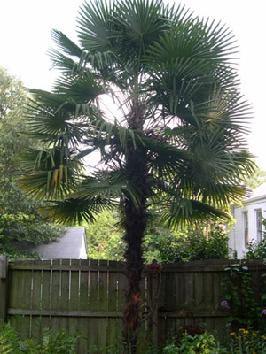

Previous || Next || Return to Mystery Plants || USC Herbarium
This Week's Mystery Plant | Dr. John B. Nelson Curator, USC Herbarium |
|
Did you know that there are four different palm species that are native to South Carolina? Our state tree (Sabal palmetto, which most people just call "palmetto") first comes to mind. It occurs naturally all along our coast, and is grown commonly as a cultivated plant well inland. "Dwarf palmetto," or Sabal minor, is commonly seen as a shrubby plant, without an upright trunk, in swamps throughout the coastal plain, and rarely into the piedmont. "Saw palmetto," Serenoa repens, is very abundant from Hampton to Charleston Counties, and farther south; this is the low, shrubby palm you see by the thousands along I-95 if you drive to Florida. Finally, "Needle palm" (Rhapidophyllum hystrix) is our rarest: it is a handsome plant, producing a short trunk, and occurs naturally in only a few places in Jasper and Beaufort Counties. There are several thousand other species of palms around the world, mostly in the tropics. All these species can be divided into two groups on the basis of their leaves. "Feather" palms have the divisions of their leaf blades laterally distributed along both sides of a central midrib, resembling a feather. (Coconut palm would be a good example.) "Fan" palms have their leaf divisions more or less clustered in a circular, or fan-like system, toward the end of the midrib. All of our native SC palms belong to the latter group. Our Mystery Plant is not at all native, although it is sometimes mistaken for our state tree. It is a frequently grown ornamental, and can tolerate our winters well (including snow and ice). A native of eastern Asia and Japan, this plant grows rather slowly, but can get up to 30' tall or so. The leafstalks are prickly, equipped with small, sharp teeth. Perhaps the trunk is the most characteristic part of the plant: it produces plenty of black, coarse fibers that impart a wild, wooly look. (For more information on the palms, take a look at Palms throughut the World, by David L. Jones, published in 1995 by the Smithsonian Institution Press.) |
 Photo by John Nelson |